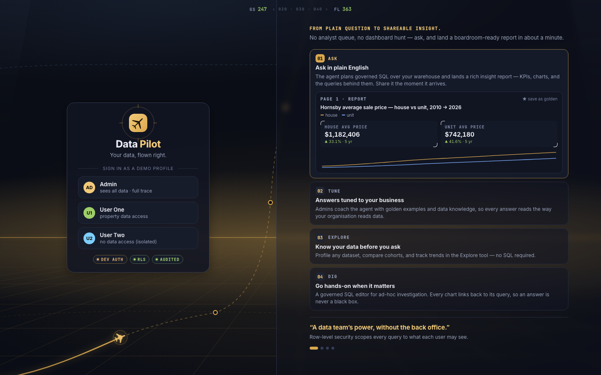
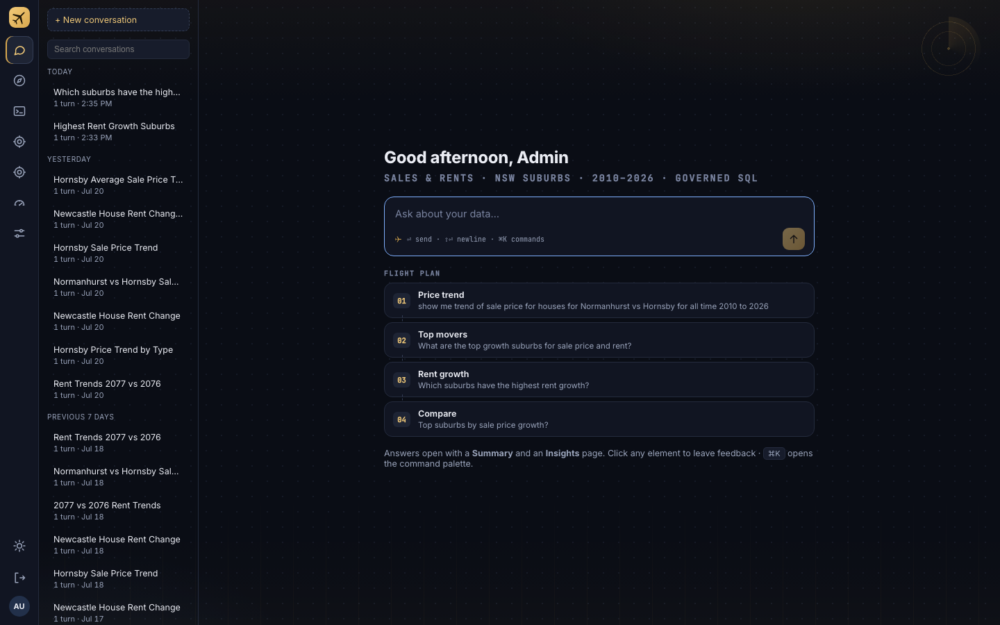
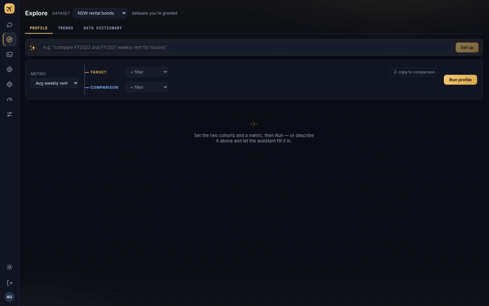
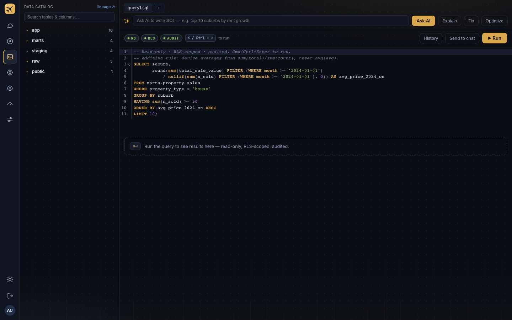

s33 · investigation · branch ui-changes · 2026-07-27
Full review of every surface, a reuse-first library strategy so the agent stops hand-building chrome, and concepts for the login scene, tagline, sidebar, and in-app background. Live mocks below are working spec — annotate anything, and answer the four decision questions at the end.
root cause
8 button styles · no spacing/type scale · native selects · 229 inline-style islands
reuse strategy
Full shadcn/ui + Tailwind v4 + tweakcn migration — maximum library reuse, future-proof over token cost
login concept
Night flight: starfield + HUD · curved horizon · neon terrain · app highlight reel right — live mock below
decisions
Strategy B · Tagline · Login V1 · Scope P0+P1+P2 · Operations rename · Background everywhere · Logo L6
01 · diagnosis
The brand itself is not the problem. s25 “Flight Deck” is a real, documented system
(five-primitive kit, type-voice rule, chart-paper light theme, reduced-motion stills, Playwright baselines —
AGENTS.md:262-300). The AI tell is that nothing below the brand layer is shared: every surface
re-invents its controls, so the app feels like ten generated pages wearing the same hat.
| Tell | Evidence | Fix direction |
|---|---|---|
| No shared components at all | Zero <Button>/<Card>/<Select>/<Tabs> components exist — only CSS class conventions, and they forked: 8+ button flavours with radii 5–999px, 5+ card variants, inputs re-declared per surface | Build the missing shared kit once (§3), delete the forks |
| Native form controls | Raw <select> dropdowns visible on Explore, SQL chart builder, Admin events filters — the single loudest “default/unfinished” signal in the screenshots | Headless Select/Popover primitives styled with your tokens |
| No spacing or type scale | 21 distinct padding/gap px literals; 19 font sizes from 8.5→24px; ~60% of radii bypass the radius tokens | Add --space-1..8 + a 6-step type scale to styles.css tokens |
| Inline-style islands | 229 style={{}} sites — GoldensPage (150), ReportEditor (43), EvalsPage (36). Evals uses no shared class at all | Migrate these three files onto the shared kit (they fight any restyle otherwise) |
| Emoji as iconography | ✨ (SQL AI bar), 🔒 (chat), ★ (login) amid an otherwise hand-drawn 20px SVG icon set | Replace with icons from the existing icons.tsx language |
| One 1,561-line stylesheet | No @layer, no file split; specificity managed by ordering + comments; Goldens needed a “scope rescue” block | Split by layer (tokens / kit / surfaces) during P0 — mechanical |
Keep: the token system (two-layer, chart-bridge to visx), the report engine (one renderer feeds chat + Explore + Ops + Goldens preview), the icon set, the light “chart-paper” theme, a11y + visual test rigs. These are assets most redesigns wish they had.
02 · surface-by-surface review




| Surface | File · lines | Current read | Proposed change | Effort |
|---|---|---|---|---|
| Login | Login.tsx · 634 | Left/right split over SVG canopy; ground grid is static geometry; hero plane hops waypoints (only the 2 ambient planes loop); HUD strip is one thin line | Full concept rebuild — §4 live mock: moving world map, continuously-flying plane, real HUD canopy, new tagline | L |
| Nav rail | NavRail.tsx · 110 | Fixed 56px, icon-only, no labels beyond tooltips; Goldens & Evals share the same icon | Hover-expand 56→196px (§5 live mock); distinct Evals icon; keep role="tab" contract | S |
| Chat | ChatPage.tsx · 566 | Hero + thread both solid; conversation list is unstyled rows; composer + suggestion cards near-default | Kit pass (cards, list rows, composer polish); flight-plan rows get waypoint styling tied to the login language | S |
| Explore | explore/* · ~900 | Native dataset select; tab underline bar fine; giant empty state; controls row feels like a form, not an instrument | Replace all selects/multiselects with kit primitives; “flight-planning console” dressing for the cohort tree; richer empty state | M |
| SQL editor | SqlEditor.tsx · 1093 | Strongest surface today (annunciator lamps, ⌘⏎ HUD key, token-themed CodeMirror) | Kit pass only: query tabs, history panel, results toolbar; drop ✨ emoji | S |
| Goldens | GoldensPage.tsx · 2974 | 150 inline-style sites, its own btn() factory, native controls — the least on-brand surface and the hardest to restyle | Migrate onto shared kit (mechanical but large); no layout redesign needed first pass | L |
| Evals | EvalsPage.tsx · 301 | Entirely inline-styled; uses zero shared classes; visually adrift from the rest | Rebuild on kit + HudBox/Annunciator (it’s an instrument panel by nature — lean in) | M |
| Ops deck | OpsPage.tsx · 599 | Cleanest, most “designed” surface — lamp band + HudBox grids + report-engine charts | Reference standard. Extract its patterns into the kit rather than restyling it | S |
| Admin | AdminPage.tsx · 358 | Solid metrics band + sparklines; tables and event filters generic | Kit pass: tables, filter selects, chip subtabs | S |
| Settings | SettingsPage.tsx · 188 | Reuses admin column; segmented control decent | Kit pass; fold in new background/motion preferences if §6 ships | S |
| Report engine | report-engine/* · 548 | The crown jewel — one renderer feeds chat, Explore, Ops, Goldens preview, Template Studio | Don’t redesign. Restyle its 3 card classes once (.h-tile .insight-card .chart-card) and all four consumers update; keep boardroom-neutral for PNG export | S |
03 · the decision
Your call (annotated in review): “move to as many libraries as possible and future-proof
the app” — maximum reuse wins over migration cost. This rewrites the doctrine at AGENTS.md:736-741
(hand-rolled CSS, no Tailwind) — that edit is now an explicit P0 deliverable, not a side effect. Options A
(headless + tokens) and C (cosmetic pass) were considered and rejected: both keep the agent hand-building more of
the stack than B does.
Option B · Tailwind v4 + shadcn/ui + tweakcn
shadcn components are copy-in owned code on Radix primitives; every coding agent is deeply fluent in this stack, and the animated-component ecosystem (Magic UI, Aceternity, React Bits, 21st.dev registry) plugs straight in. The default-look risk is handled by encoding the Flight Deck palette as a custom tweakcn theme — navy/amber/JetBrains-Mono instrument voice, not zinc-and-white.
coexistence — old CSS and Tailwind side by side
styles.css in a cascade @layer above preflight so the reset can’t wreck unmigrated surfaces — preflight stays off/scoped until P3 completes.--background --primary --radius…) are aliased from the existing Flight Deck tokens, not duplicated — one palette, two naming systems during migration; charts/tokens.ts and visx keep working untouched.what shadcn gives us per pain point
Select/Combobox everywhere (Explore, SQL chart builder, Admin filters).Button with variants, Card, Input, Tabs, Table, Dialog, Tooltip, DropdownMenu, Command (replaces the hand-rolled ⌘K palette).Sidebar block with an icon-collapsible mode — the hover-expand rail in §6 becomes configuration, not custom code.lucide-react (shadcn default) replaces emoji glyphs; the hand-drawn brand icons (plane, reticle) stay.Globe (cobe) and Dotted Map are literally pre-built shadcn-registry components — V1/V2 below become install-and-style.| Library | What it gives us | Fits | Verdict |
|---|---|---|---|
| shadcn/ui + Tailwind v4 | Full owned-code component system on Radix primitives; the ecosystem standard agents know best; ships the Sidebar block and Command palette we need | core | adopt |
| tweakcn | Visual theme editor whose whole purpose is escaping the default shadcn look — we encode navy/amber Flight Deck into it as the app theme | core | adopt |
| lucide-react | shadcn’s default icon set — replaces emoji glyphs; brand icons (plane, reticle) stay hand-drawn | core | adopt |
| Magic UI | 150+ animated shadcn-registry components incl. ready-made Globe (cobe wrapper) and Dotted Map — the login scene’s building blocks | flair | adopt |
| React Bits | Animated components in CSS/GSAP, ships prefers-reduced-motion support — #2 in JS Rising Stars 2025 | flair | selective |
| Aceternity UI | Copy-paste hero showpieces (spotlights, 3D cards); heavy Motion — login/empty-state moments only | flair | selective |
| cobe | 5 kB zero-dep WebGL dotted globe (what Magic UI’s Globe wraps) — login V2 | flair | via Magic UI |
| dotted-map | Build-time dotted-world SVG (what Magic UI’s Dotted Map uses) — login V1 map source | flair | via Magic UI |
| Base UI @base-ui-components/react | Headless primitives — was the Option A core | — | superseded by shadcn |
| react-flight-indicators family | SVG attitude/heading/airspeed instruments — old & niche | — | visual reference only |
| Arwes | Sci-fi HUD framework — explicitly unmaintained | — | inspiration only |
Skills leverage (process, not packages): Anthropic’s frontend-design skill and the dataviz skill are already installed in this environment — every implementation PR should run under them; they exist precisely to stop “generic AI frontend” output. Your mood board at docs/cockpit/ (headsup1/2.png, flightpaths.png) feeds the login rebuild.
04 · login concept — decided ✓ V1
Locked per your annotations, with the final composition: cockpit POV — twinkling starfield and the in-helmet HUD above (drifting heading tape, pitch ladder, flight-path marker, GS/FL); the gold horizon curved like a planet’s edge; and the neon grid terrain flowing continuously toward the viewer, following that curvature, with ridges framing a flat central corridor. The globe is gone (its edge fought the horizon curve — you flagged it), and the right side is again a quick highlight reel of the app: Ask → Tune → Explore → Dig micro-mocks auto-cycling like today’s walkthrough, re-dressed for the night-flight scene. The background is one dependency-free ~150-line canvas. Reminder: today’s login is a left/right split — card left, reel right, scene behind everything.
Cleared for insight.
What Data Pilot does
Plain English in — a boardroom-ready report in ≈1 min.
Admins coach it with golden answers — replies read the way your org reads data.
Profile and compare any cohort — no SQL required.
Governed SQL — every chart links to its query.
Live: stars twinkle; the curved gold horizon glows; the terrain flows; the queries-today instrument ticks up. This is V1.4 — per your landing-page notes, the carousel is gone: all four benefits now show at once in a wide 2×2 grid (“What Data Pilot does”) that closes the gap to the sign-in card, so a new user scans the entire value story without waiting. The impact instrument cluster (queries today · 3.1M rows governed · ≈1 min question→report · 30 golden answers) anchors the bottom. Honors prefers-reduced-motion.
V1 · Night flight over the neon grid — refined to V1.2 below
Starfield + HUD sky, curved horizon, flowing neon terrain, app highlight reel on the right. Alternatives considered and passed: V2 flat scrolling dotted map (nav-display style) and V3 minimal upgrade of today’s scene (continuous plane + thicker HUD strip). The earlier globe/moving-map iteration was dropped on review — its edge clashed with the horizon curve.
You asked for a skill or guide to critique the mock. Three were used:
Anthropic’s frontend-design skill (installed here — its principles: one signature element, structural devices must
encode something true, copy in active voice, “remove one accessory”);
Vercel’s Web Interface Guidelines (an agent skill of
100+ MUST/NEVER rules for interfaces — installable via vercel.com/design/guidelines/install, worth adding to
this repo for P1);
and login-specific UX guidance from Baymard /
Learn UI Design /
Authgear’s 2025 guide (single primary action, SSO
prominent, trust signals near the form, value proposition on the page). Other skills available: the
dataviz skill is also installed here (governs every chart we build in P1–P4); Anthropic publishes
web-artifacts-builder (React/Tailwind/shadcn build patterns — directly useful once Option B lands); and community
directories (skills.sh,
agent-skills library) list ~46 design/UI
skills — frontend-design + WIG + dataviz cover critique, rules, and charts; more would overlap. The mock above is now
V1.3 — the critique applied:
| Guide · rule | Issue found in V1 | Fix in V1.2 |
|---|---|---|
| frontend-design · “structural devices must encode something true” | GS 253 / FL 378 were fake telemetry dressed as instruments | Readouts now state product truths: RLS ACTIVE and a live queries-today counter — the instrument voice survives, the fiction doesn’t |
| frontend-design · “remove one accessory” | Two pitch ladders + flight-path marker cluttered the center, overlapping the reel | Cut. The HUD is now one heading tape + two truthful readouts |
| Baymard/Authgear · one primary action, SSO prominent | No visible CTA — three equal demo rows, and the real Google path wasn’t represented | Gold Continue with Google primary button; demo profiles demoted below an “or” divider as secondary rows |
| Learn UI · active voice, say what happens | “◉ Admin — sees all data” named a role, not an action | Rows now read Continue as Admin etc. |
| Login guides · trust signals near the form | The real login’s DEV AUTH · RLS · AUDITED chips were missing from the concept | read-only · rls · audited chips anchored under the card |
| WIG · contrast (“MUST: Meet contrast — prefer APCA”) | Card text sat directly on moving stars/terrain — contrast varied frame to frame | A radial scrim behind the left column steadies the card’s backdrop; card opacity raised |
| Login guides · hierarchy: form first, value prop second | Card and reel were equal-weight twin panels | Reel narrowed, dimmed, retitled “What you can do” — clearly the supporting act |
| WIG · motion (“animate only to clarify or delight; honor reduced-motion”) | Already compliant — kept | Canvas freezes to a designed still; reel stops auto-advancing under prefers-reduced-motion |
P1 build checklist from the same guides (applies to the real Login.tsx, not representable in a static mock): visible :focus-visible rings on every control · hit targets ≥44px on mobile · autocomplete/name/type on any credential fields · never block paste · submit stays enabled until the request starts, then disables with a spinner · errors inline and focused on submit · mobile input font-size ≥16px. Consider installing the WIG agent skill into this repo so every P1–P4 PR gets audited against it.
05 · tagline — decided ✓
Your pick (annotated ①). Replaces “Your data, flown right.” at
Login.tsx:569 + index.html:7 (meta description) in P1. The mock card above already wears it.
Full candidate list kept for the record — click any row to preview it in the mock:
| Tagline | Why it works | |
|---|---|---|
| ① | Cleared for insight. decided | Real ATC phraseology; short, confident; “cleared” doubles as governance/permission — which is literally the product (RLS) |
| ② | Every question gets a flight plan. | Ties directly to the existing “Flight plan” UI on the chat hero; describes what the agent actually does (plans governed SQL) |
| ③ | Fly the data, not the dashboard. | Sharpest positioning — names the enemy (dashboard hunting); best as a marketing line, maybe too spiky for a login card |
| ④ | Answers at altitude. | Shortest; alliterative; “altitude” = overview/perspective. Vaguer about what the product does |
| ⑤ | Data, cleared for takeoff. | Energetic, familiar phrase; slightly generic-startup compared with ① and ② |
| ⑥ | From question to touchdown. | Mirrors the product journey (ask → landed report); “touchdown” echoes “landing an answer” |
| — | Your data, flown right. current | Keep — it’s serviceable; “flown right” carries the governance wink already |
05·b · logo — decided ✓ L6
Today’s mark is a 45°-rotated airliner on a gold gradient tile
(icons.tsx:179-195). Seven directions below — pick one to develop, or annotate a mashup. Whichever wins,
the change lands in two synced places: BrandMark and the hand-maintained public/favicon.svg
(hardcoded hexes, rx 22 vs the component’s 25).
06 · in-app shell
width 56→196px, 180ms var(--ease); labels fade/slide with a 50ms delay; collapse on leave.Sidebar block (icon-collapsible mode) — this behavior is configuration, not custom code; we add the hover trigger and Flight Deck skin.role="tab" — e2e selectors survive; mobile bottom-nav untouched..view-host’s min-width:0 is load-bearing (styles.css:573).NavRail.tsx:28,31; lucide has distinct candidates).getByRole("tab", {name}) e2e assertions update together in P2.Your call from review: the night-flight background runs on every screen of
the app, moving, at a slower pace. One shared “canopy” component replaces today’s static
body::before/::after canvas (styles.css:161-186), with two intensities:
styles.css:1086-1090)..app, its rAF paused when the tab is hidden; honours reduced-motion; an “Ambient motion” toggle lands in SettingsPage.Gotcha for any bg-color change: it’s duplicated in three places — index.html:29 (pre-paint JS), index.html:33-34 (CSS fallback), theme.ts:14.
07 · phased plan & risks
ui/Canopy.tsx) · “Cleared for insight.” · 2×2 benefit grid + example-question strip + outcome instruments · L6 mark across BrandMark + favicon.svg · a contrast bug caught and fixed by a11y.spec.ts · baselines re-shot<select> left in the app — the remaining 34 converted (Goldens 17 · ReportEditor 8 · Grader 7 · Playground 2) via KitSelect plus a new KitMultiSelect (Popover + Command) · 23 e2e calls rewritten onto a data-value contract + a pickOption() helper · emoji → lucide everywhere · dead select CSS deletedKitEmpty across every bare empty state (goldens, objects, feedback, eval cases, conversations) · one orchestrated login entrance (card → story → benefits → instruments) · no animation library added: scattered effects are exactly what makes a UI read as AI-made, and PNG export neutrality holds by constructionrisks
e2e/visual.spec.ts — re-shoot deliberately per phase (--update-snapshots), never blindly.getByRole("tab") on rail + login dots, login_walkthrough_view events — preserve roles/names..answer-page.AGENTS.md:736-741 rewrite ships in P0 so agent guidance and codebase never disagree.what stays untouched
registry.ts ↔ agent/pages.py sync + CI gate)charts/tokens.ts)theme.ts, pre-paint script), light “chart-paper” palette08 · decisions
ui-changesQ1 · reuse strategy — decided ✓
Option B · full shadcn/ui + Tailwind v4 + tweakcn migration.
“Move to as many libraries as possible and future proof the app.” §03 carries the migration architecture; P0 includes the AGENTS.md doctrine rewrite.
Q2 · login scene — decided ✓
V1 · Night flight over the neon grid (as mocked: starfield + HUD, curved horizon, neon terrain, app highlight reel — no globe).
Q3 · tagline — decided ✓
“Cleared for insight.”
Lands in P1 at Login.tsx:569 + index.html:7.
Q4 · first wave — decided ✓
P0 + P1 + P2, sequenced as three stacked PRs (foundation → login → shell, incl. the “Operations” rename).
Q5 · logo — decided ✓
L6 · Night-flight horizon — stars + curved horizon + neon grid (the login scene, no sphere). Lands in P1 across BrandMark + favicon.svg.